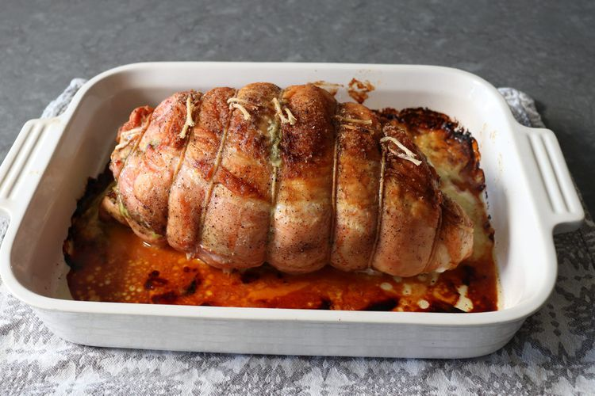

Holiday Roast Turkey Cordon Bleu

Moist, tender, and so flavorful that no gravy is needed
A melty ham and cheese filling with savory pesto, tangy mustard, and sweet cranberries adds interest and taste to this holiday roast turkey Cordon Bleu.
Whether this is your first or second turkey of the season, I really do hope you give this a try soon. Enjoy!
Ingredients
- 1 teaspoon vegetable oil
- 1 (4 pound) boneless, skin-on turkey breast
- 2 teaspoons kosher salt, divided
- 1 teaspoon freshly ground black pepper, divided
- ⅛ teaspoon ground cayenne pepper
- 2 tablespoons Dijon mustard
- 2 tablespoons prepared pesto sauce
- ¼ cup dried cranberries, or to taste
- 4 ounces ham, thinly sliced
- 5 thin slices provolone cheese
Steps
- Preheat the oven to 350 degrees F (175 degrees C). Grease a baking dish with vegetable oil.
- Place turkey breast, skin-side down, on a work surface. Open it up and trim off any connective tissue. Cut at an angle along the natural seam of the turkey and butterfly it open so it's all about the same thickness; don't cut all the way through.
- Season turkey breast with 1 teaspoon salt, ½ teaspoon pepper, and cayenne. Spread Dijon over the surface and then spread pesto over that. Scatter dried cranberries over top, then layer with ham and provolone cheese.
- Roast in the center of the preheated oven until internal temperature reaches 145 degrees F (65 degrees C), 1 ½ to 2 hours.
- Remove from the oven and let rest for at least 15 to 20 minutes. Cut off strings and slice.
Home